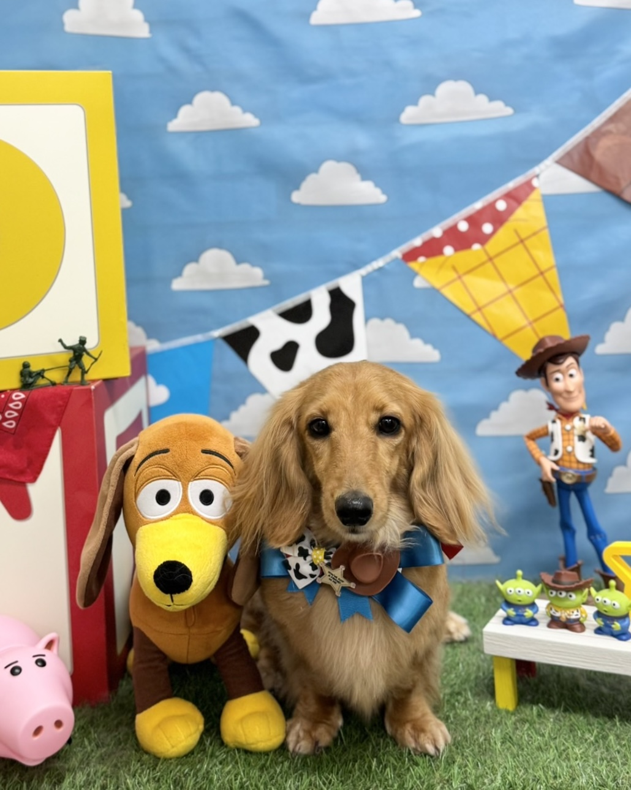
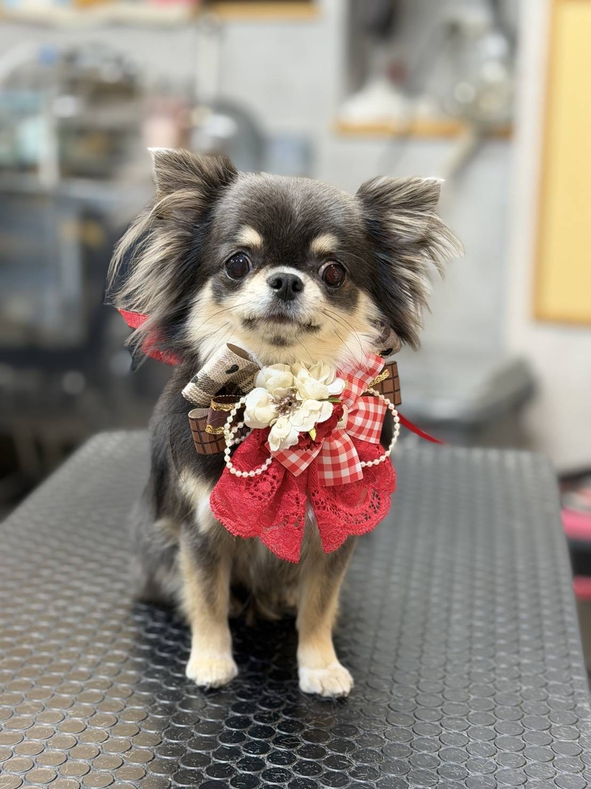
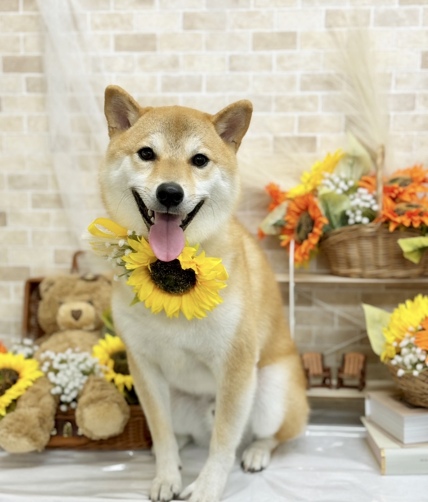

2019.02.03
出会い
心 八剣伝 中津店で初めまして
About Us
出会いから結婚式当日までのふたり
Memory Timeline
2019.02.03
心 八剣伝 中津店で初めまして
2020.03.14
伊勢神宮とおかげ横丁が初デートの思い出
2021.07.01
愛娘のリアちゃんを小豆島からお迎え🚢
2022.06.02
新郎就職先の浜松でふたりの新生活が始まりました
2025.03.14
ふたりが付き合って5年の日に婚約💐
2025.04.28
悩みに悩んでCHAUMETの指輪に決定💍
2025.06.14
中之島のお店で母が涙を流して喜んでくれました
2025.09.13
中津のお寿司屋さんで結婚挨拶を兼ねたお食事会を開きました
2025.09.14
大阪で婚姻届を出して甲子園へ阪神を応援しに行きました🐯
2025.11.24
リングドッグを叶えるべく式場巡りをした日に即決⛪️
2026.02.20
山梨の山中湖と根津記念館で和装撮影🗻
2025.07.03
待ちに待った結婚式当日！楽しみましょう🕊️
Personal Profiles
Groom
好きなもの
Bride
好きなもの
Our Beloved Dogs
Honda Family

好きなことボール遊び サッカー⚽️

好きなこと公人（新郎父）
Soga Family
好きなこと狭くて暗い一人空間
好きなこと真白か母 智美の首元
Kudo Family

好きなこと浜松の川遊び
Q&A
01 第一印象
Y
年下と思わずに綺麗なお姉さんだなぁ
M
無口だけどバイト先の優しい先輩！
02 好きなところ
Y
一緒にしたいことをしてくれるところ
M
お願いをたくさん聞いてくれるところ
03 直して欲しいところ
Y
料理をするとケガをするところ
M
ぜんぜん怒ってくれないところ
04 好きなおにぎりの具
Y
ツナマヨ・こんぶ
M
おかか・鮭・明太子
05 思い出の場所
Y
京丹後で泊まったオーシャンビューホテル
M
ランドホテルの美女と野獣ルーム
06 これから一緒に叶えたいこと
Y
家でいろんな動物を飼って動物園みたいにしたい
M
国内外ぜんぶの美味しいもの巡り♪